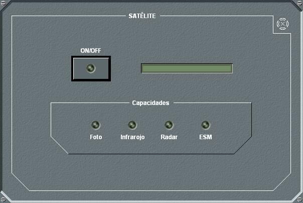

Satélite

El panel de detalle del Satélite permite encender o apagar el transceptor, pulsando el botón ON/OFF.
En las unidades submarinas solo se puede encender el transceptor si están en superficie o tienen el mástil correspondiente izado.
Además muestra las capacidades del equipo, que pueden incluir Foto (Capacidad de detectar contactos visuales), Infrarrojo (capacidad de detectar contactos por IR), Radar (capacidad de detectar contactos por radar) y ESM (capacidad de detectar emisiones ESM).
Cuando se enciende el satélite de una unidad, las trazas que la unidad tiene por otros sensores, y son detectadas también por satélite, aparecen duplicadas. Esto debe ser así debido al retardo con el que se obtienen las detecciones de satélite. Los retardos del satélite suelen ser altos (del orden de minutos), por lo que si se compilaran estas trazas con las de los sensores se perdería la información puntual del contacto proporcionada por los sensores propios. Se emplea una numeración diferente para las detecciones por satélite (90000 ‑ 97777), para diferenciarlas de las del resto de sensores.